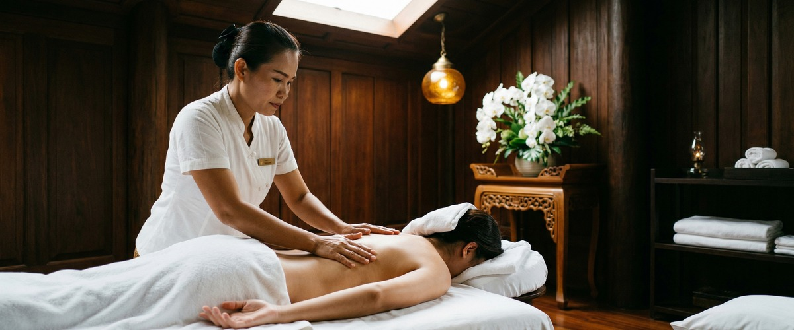
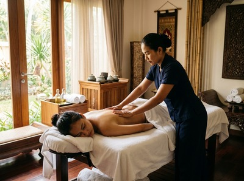

Nine in ten UK adults are experiencing high or extreme levels of stress, according to Mental Health UK's Burnout Report 2026.

In Scotland and Wales, that figure climbs to 93%. If you work in Glasgow — near Blythswood Square, on Sauchiehall Street, or in a hybrid role that never fully switches off — your body is likely carrying more than you've admitted to yourself. Burnout is not laziness. It is a real physical crisis, and a holiday or long weekend rarely fixes it.
The World Health Organisation classifies burnout as an occupational phenomenon — not a personality flaw. It builds when workplace stress goes unmanaged for long enough that the nervous system stops recovering between demands.
The physical symptoms are real: poor sleep, persistent muscle tension, headaches, and cortisol that stays high even when you're sitting still. That tightness in your neck and shoulders at four o'clock on a Friday is not just discomfort. It is your body asking for help.

The 2026 Burnout Report found that 20% of UK workers took time off due to stress-related mental health issues. More troubling, 27% of those who returned to work received no support. Only 17% had any kind of formal recovery plan in place.
Glasgow's workforce spans finance, healthcare, creative industries, and hospitality. The city's working culture can reward long hours, and blurred remote and office boundaries make it harder to know when work actually ends.
Without clear recovery time, the nervous system never fully resets. Feeling persistently exhausted, irritable, stiff, or emotionally flat — even after time off — is not weakness. It is a signal that your body needs more than a duvet day. You can book a session at Glasgow Thai Massage to start building real recovery into your week.
A wellness plan is not a buzzword. It is a practical, consistent set of habits that give your body and mind enough time to recover under pressure.
For most Glasgow workers, the gap is not awareness — it is structure. People know rest matters. They just don't schedule it with the same seriousness as a meeting.
A realistic recovery plan rests on three anchors: physical release, nervous system regulation, and sleep quality. Each one supports the others. Traditional Thai massage uses acupressure and assisted stretching along the body's sen energy lines to release deep tension and restore circulation. When that physical load lifts, the nervous system settles — and when the nervous system settles, sleep improves.
Research in the International Journal of Neuroscience found that massage therapy reduces cortisol while increasing serotonin and dopamine — the chemicals linked to calm and mood balance. Studies have shown cortisol reductions of up to 30% after a single session. For someone in the grip of burnout, that is a meaningful shift.
At Glasgow Thai Massage, the approach is rooted in the Wat Pho tradition from Bangkok. Maliwan, our founder, trained there and has over 20 years of practice.
Traditional Thai massage is done fully clothed, uses no oils, and covers the full body — back, hips, legs, shoulders, and neck. These are the areas where burnout tends to settle.
For bodies that are tight rather than simply tired, Thai sports massage is worth considering. It targets specific muscle groups and works well for people who carry tension in the lower back and upper shoulders from desk work or long commutes. Both treatments support the deep physical release that makes the rest of a recovery plan easier to keep up.
The Burnout Report 2026 found that workers aged 18 to 24 were most likely to take time off due to stress. Adults aged 25 to 34 reported the highest rates of extreme stress of any age group.
These are not people who need to be told stress is bad. They need practical ways into recovery that fit a real working week.
Victoria Chambers on West Nile Street is a short walk from Buchanan Street subway and close to most city centre offices. A session doesn't require rearranging your day. Many regulars book at lunch or after work and return to their evening feeling measurably different.
That consistency matters. Recovery from burnout is not a one-off event. It is something the body needs to experience again and again before it starts to trust that rest is available.
Burnout rarely announces itself clearly. It builds quietly until the effort needed to function feels out of all proportion to what you're doing.
If that sounds familiar, building a recovery plan — starting with regular physical treatment that tackles the real effects of chronic stress — is one of the most practical things you can do right now.
Yes, in a direct and measurable way. Research shows massage therapy reduces cortisol — the primary stress hormone — while increasing serotonin and dopamine. For someone experiencing burnout, that shift matters.
Traditional Thai massage also addresses the physical symptoms of chronic stress: muscle tension, restricted breathing, and poor sleep. It is not a cure on its own, but it is a strong anchor for any recovery plan.
Most people dealing with active burnout benefit from weekly or fortnightly sessions early in recovery. Once tension eases and sleep improves, monthly maintenance is often enough.
Your therapist at Glasgow Thai Massage can advise based on how your body is responding. Consistency matters more than duration — regular shorter sessions tend to outperform occasional long ones.
Stress is the body's response to pressure — it can be managed and recovered from with adequate rest. Burnout happens when stress is sustained long enough that the body stops recovering between demands.
The key difference is that rest alone does not fix burnout the way it relieves normal stress. Burnout needs active recovery: physical treatment, nervous system regulation, and real changes to how rest is prioritised.
No. Traditional Thai massage at Glasgow Thai Massage is done fully clothed on a mat, with no oils involved. The session focuses on acupressure and assisted stretching.
If you choose Thai oil massage instead, you would undress to your underwear, with privacy maintained throughout. Either way, your therapist will explain exactly what to expect before the session begins — and there is no pressure to do anything you are not comfortable with.
Glasgow Thai Massage is at Victoria Chambers, 142 West Nile Street — a short walk from Buchanan Street subway and easy to reach from most parts of the city centre on foot or by bus.
Many clients book during their lunch break or straight after work. The central location makes it simple to fit regular sessions into a working week without much travel time.